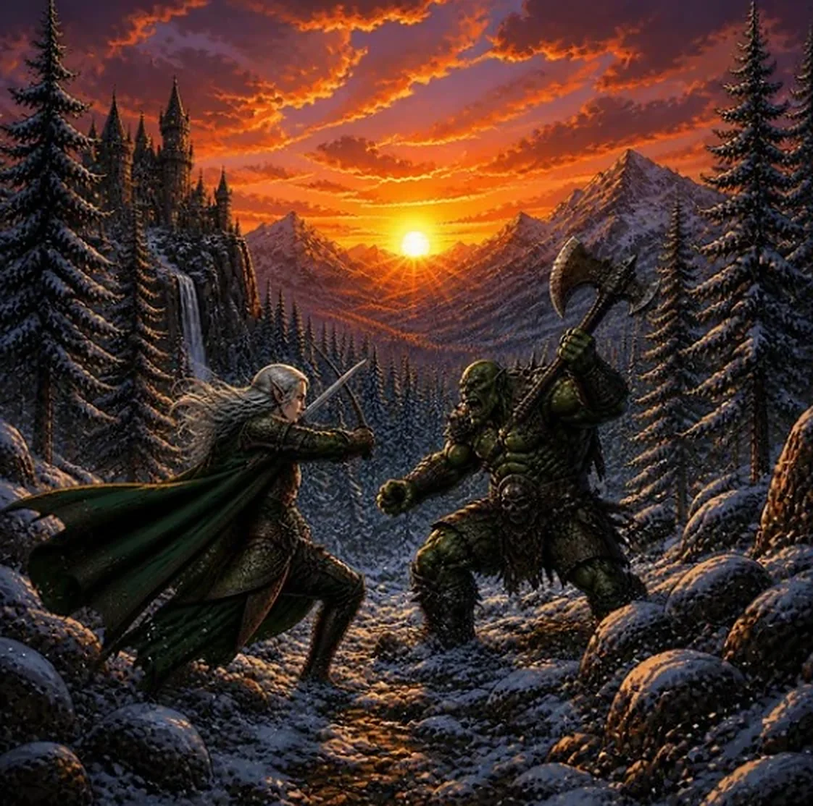

À propos du guide
Le projet
La Cote du Héros est un guide indépendant, gratuit et sans publicité, fait pour les collectionneurs de livres dont vous êtes le héros : tenir sa collection à jour, la suivre dans le temps et trouver les livres qui lui manquent.

À quoi sert ce site
C'est d'abord un outil pour tenir sa collection à jour et la suivre dans le temps. Vous indiquez les livres et les éditions que vous possédez, dans l'état où ils sont, et le guide garde la trace de ce que vous avez, de ce qu'il vous manque et de la façon dont votre collection grandit.
Il sert ensuite à trouver les livres : voir ce qu'il reste à chercher pour finir une série, retrouver la bonne édition, repérer les nouveautés et les livres annoncés. Il garde aussi une liste « À trouver » pour ceux que vous cherchez.
Les prix viennent après, comme de simples repères : ils aident à comprendre ce qu'un livre vaut à peu près. Ce ne sont ni des prix d'achat ni des prix de vente, et aucune cote ne vous dit « achetez » ou « vendez ». Le guide est fait pour les collectionneurs, pas pour les traders (c'est dit avec le sourire, mais c'est sérieux).
Des mondes à parcourir, des livres à retrouver.
Pourquoi ce guide
Les livres-jeux ont paru en plusieurs éditions, chez plusieurs éditeurs, pendant près de quarante ans. Savoir de quelle édition on parle est la première difficulté du collectionneur : un même titre existe sous plusieurs couvertures, et seul le numéro d'ISBN les distingue vraiment. Ce guide réunit toutes les éditions au même endroit, pour les reconnaître, les comparer et dire lesquelles vous avez.
Ce que vous y trouvez
- 528 éditions, rattachées à 286 livres et à 43 séries, avec leur jaquette et leur fiche (éditeur, année, pages, auteurs).
- Une collection à tenir à jour, avec un inventaire guidé pour la constituer sans tout saisir à la main, et une liste « À trouver ». Les deux sont enregistrées dans votre Google Drive.
- Les nouveautés et les livres à paraître, repérés chaque jour.
- Pour chaque édition, un repère de prix par état : convenable, bon état, très bon état (TBE).
- Une page Évolutions des prix, ce qui monte, ce qui baisse, et d'où viennent les changements.
Comment les prix sont estimés
Une cote est une estimation, jamais un prix fixé. Elle donne un ordre de grandeur, pas la somme qu'on obtiendra.
- L'ancien relevé. Point de départ du guide : des cotes d'archives, qui ne sont plus tenues à jour. Quand rien de plus récent n'existe, c'est lui qui s'affiche, et la fiche le dit.
- Les annonces actuelles. Le guide relève régulièrement les annonces en ligne d'une plateforme, par son interface officielle et sous réserve de ses conditions d'utilisation. On n'en garde que des chiffres d'ensemble (nombre, minimum, médiane, maximum) : ni titre d'annonce, ni vendeur. Une annonce est un prix demandé, pas un prix payé : le guide ne la corrige pas et le signale.
- Les prix des éditeurs. Pour les nouveautés encore en vente neuve, le prix de l'éditeur sert de repère pour le très bon état.
- Les prix validés. Un prix peut être confirmé ou corrigé après vérification : ce prix prime alors sur tout le reste, et la fiche indique qu'il a été validé, et quand.
Quand plusieurs sources existent, la cote est une médiane pondérée : une vente réelle compte plus qu'une annonce, qui compte plus qu'une archive, et un prix récent compte plus qu'un prix ancien (le poids est divisé par deux tous les 90 jours, tous les 365 jours pour l'ancien relevé). Un état sans prix est déduit des autres états de la même édition (le bon état vaut environ 60 % du très bon état, le convenable environ 40 %), et la fiche l'indique.
La fiche de chaque édition précise la nature du prix, le nombre d'observations, leur date et un niveau de confiance.
Ce que vous pouvez faire
Consulter le guide est libre. Le compte Héros est un compte Google, gratuit : il ouvre tout le reste.
| Fonction | Visiteur | Héros |
|---|---|---|
| Chercher un livre par titre, auteur ou ISBN | ✓ | ✓ |
| Parcourir l'étagère, filtrer et trier (série, édition, année, éditeur, prix) | ✓ | ✓ |
| Ouvrir les fiches : jaquette, détails, rareté d'après les tirages | ✓ | ✓ |
| Voir les derniers ajouts et les livres à paraître | ✓ | ✓ |
| Lire les notes moyennes des livres | ✓ | ✓ |
| Voir les prix | Un niveau, de € à €€€€€ | L'estimation, par état et par livre |
| Chercher l'édition en vente (Leboncoin, Vinted, eBay, Facebook) | — | ✓ |
| Constituer sa collection : état et nombre d'exemplaires | — | ✓ |
| Scanner le code-barres d'un livre pour l'ajouter | — | ✓ |
| Compléter sa collection pas à pas, série par série | — | ✓ |
| Importer ou exporter sa collection | — | ✓ |
| Suivre la valeur de sa collection et l'analyser | — | ✓ |
| Séparer ses doubles à vendre et les livres à trouver | — | ✓ |
| Retrouver sa collection sur tous ses appareils (Google Drive), et une ancienne version si besoin | — | ✓ |
| Ajouter un livre au guide | — | — |
| Noter les livres de 1 à 5 | — | ✓ |
Le compte ne sert qu'à cela. Le guide ne voit ni votre courriel ni vos autres fichiers, et vous pouvez tout supprimer à tout moment : voir la page Confidentialité.
D'où viennent les données
- Catalogue et fiches : notices du catalogue général de la Bibliothèque nationale de France, complétées à partir de l'ancien relevé.
- Prix : voir « Comment les prix sont estimés » ci-dessus.
- Rareté : le nombre de tirages de chaque édition Gallimard, compilé par Thomtom d'après le site exlibris.to, et la part des collections qui possèdent le livre (collection-ldvelh.fr). C'est une information : elle n'entre pas dans la cote.
- Jaquettes : © leurs éditeurs, reproduites à titre d'illustration.
- Polices : Cormorant Garamond et Source Sans 3, sous licence SIL Open Font 1.1, hébergées avec le site.
Ce que le guide ne fait pas
Il ne vend rien et ne contient ni publicité ni lien d'affiliation : les boutons Vinted, Leboncoin, eBay et Facebook des fiches (réservés aux Héros) ouvrent de simples recherches sur ces sites, sans rien rapporter au guide. Consulter les fiches ne demande aucun compte, et le guide ne mesure pas votre visite. Il ne recopie pas les sites d'annonces ou de comparaison de prix qui interdisent la collecte automatique de leurs pages : cette interdiction est respectée.
Votre collection
La collection que vous composez demande un compte Google : elle est enregistrée dans l'espace réservé de votre propre Google Drive, que seul ce site peut ouvrir, avec une copie sur votre appareil. Le guide n'a pas de serveur et ne la voit jamais. Les détails sont dans la page Confidentialité.
Contribuer
- Signaler une erreur, proposer un prix : une édition manquante, une fiche erronée, un prix que vous avez constaté. Écrivez-moi depuis la page Contact.
- Ajouter un livre : la page « Ajouter des livres » est réservée à l'équipe du guide.
- Faire connaître votre chaîne, votre site ou votre boutique : voir la page Communauté.
Le formulaire de contact
Le formulaire de la page Contact envoie votre message au service FormSubmit (formsubmit.co), qui le transmet par courriel à l'éditeur. Il reçoit ce que vous écrivez : votre nom si vous le donnez, votre adresse électronique et le texte du message. Ces informations ne servent qu'à vous répondre : elles ne sont ni publiées ni utilisées pour autre chose, et l'éditeur ne les garde pas plus longtemps que nécessaire pour traiter votre demande. Vous pouvez demander leur effacement par ce même formulaire. Rien n'est envoyé tant que vous n'avez pas cliqué sur « Envoyer ».
Soutenir le guide
Le guide reste gratuit et sans publicité. S'il vous est utile, vous pouvez offrir un café : cela aide à couvrir les frais du site, notamment son adresse web. C'est libre et sans aucune obligation.